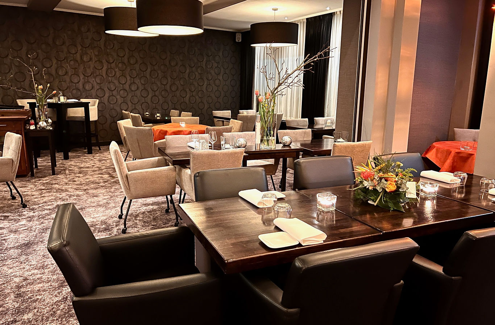

Woensdag en donderdag
SteakNight
Een flinke Black Angus biefstuk van 250 gram met begeleidend garnituur. Nu twee avonden in de week: de steaknight is uitgebreid naar de donderdagavond.
€ 25

Stationsplein 2, Boxtel
Hartelijkheid, aandacht, gezelligheid en kwaliteit. Lekker eten in een heerlijke omgeving, binnen en buiten.
Woensdag t/m zaterdag vanaf 17:00 uur
Sinds 1996 hebben wij Plein2 uitgebouwd naar het restaurant wat het nu is. Casual dining zonder al te veel tierlantijnen en poespas. Kom het meemaken en laat jezelf verrassen.
Kies van onze à la carte kaart, of geniet onbezorgd van een van onze wisselende verrassingsmenu's. Met speciale wensen houden wij uiteraard rekening, als u ze bij de reservering laat weten.
Gewaardeerde gasten en vrienden van Plein2: we sluiten de laatste weekenden van ons 30-jarig jubileumjaar af met de feestweken.
Woensdag en donderdag
Een flinke Black Angus biefstuk van 250 gram met begeleidend garnituur. Nu twee avonden in de week: de steaknight is uitgebreid naar de donderdagavond.
€ 25
Vrijdag en zaterdag
Een speciaal, vaststaand menu van kleine gerechtjes.
Gerechten kunnen wisselen naargelang de verkrijgbaarheid.
€ 45
Reserveren kan via de website of telefonisch: 0411-672237.
Neem een kijkje bij onze à la carte kaart. Hoofdgerechten worden geserveerd met bijpassend garnituur.


Rodewijnsaus, pepersaus, champignonsaus, stroganoffsaus
Bijgerecht frieten met mayonaise € 5,00 (voldoende voor 2 personen)
Speciaal voor de woensdag en donderdag bij Plein2: een surprise menu inclusief waterservice, brood en smeersels, koffie of thee.
Voorgerecht, hoofdgerecht, dessert
Voorgerecht, soep, hoofdgerecht, dessert
Voorgerecht, soep, tussengerecht, hoofdgerecht, dessert
Uit te breiden met een nagerecht van diverse soorten kaasjes (€ 7,50) of extra friet met mayo (€ 5,00, voor 2 personen).
Komt u met een gezelschap? Dan bent u bij ons aan het juiste adres. Zowel privé als zakelijk bent u altijd welkom. Graag maken we tijd voor u vrij om te bespreken wat uw wensen zijn en wat onze mogelijkheden zijn.
Denk aan een gezamenlijk diner, een lunchbijeenkomst, een condoleance of een receptie: het behoort allemaal tot onze mogelijkheden. Ook op woensdag of donderdag bent u welkom met uw gezelschap, ook als u liever van de menukaart kiest (mits vooraf besproken).
Ben jij (of ken jij) iemand die op zoek is naar een leuke baan in een dynamisch team? We zijn altijd op zoek naar enthousiaste collega's. Je zal je verbazen over wat je kan verdienen bij Plein2. Jij goed voor ons? Wij goed voor jou!
Ook stagiaires zijn altijd welkom. Zowel in de bediening als in de keuken kun je bij ons stage lopen. Wij garanderen correcte voorwaarden en een professionele opleiding en begeleiding (3 leermeesters).
Bel 0411-672237Blijf op de hoogte en ontvang regelmatig leuke nieuwtjes, acties en aanbiedingen van Plein2. Opzeggen kan op ieder gewenst moment.
Vragen, opmerkingen of een speciale gelegenheid? Bel ons of stuur een bericht.
Restaurant Plein2Woensdag t/m zaterdag vanaf 17:00 uur
Zondag tijdelijk gesloten
Maandag en dinsdag gesloten
Volg ons: @plein2.boxtel · @plein2